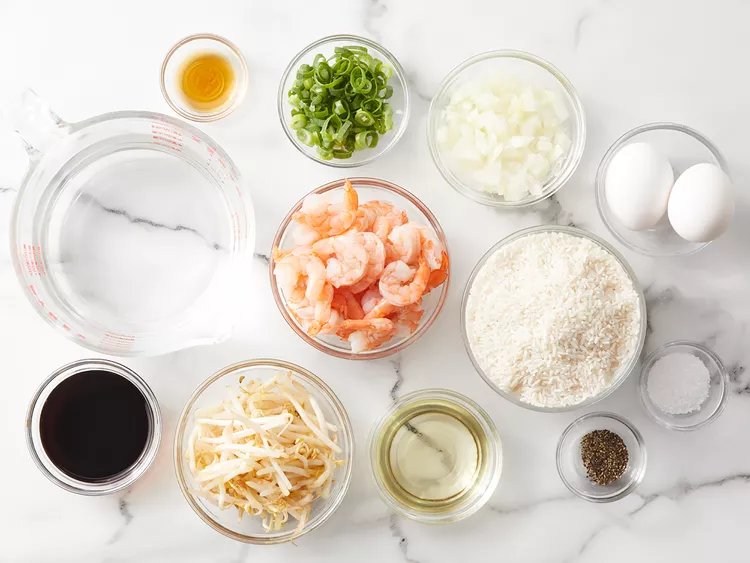
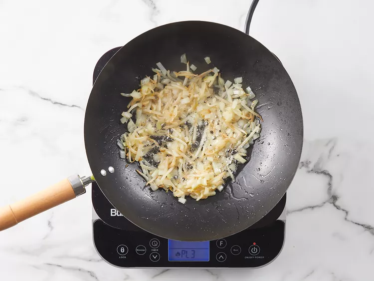
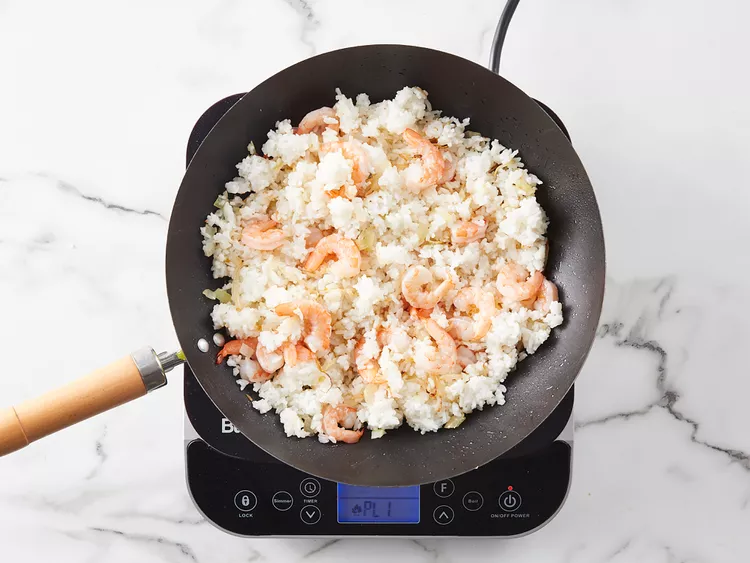

This is my father's shrimp fried rice recipe that he made when he owned a Chinese restaurant. This recipe cooks the rice but you can use leftover cooled rice to save on time. It's easy to make and great for a family dinner that tastes as good as takeout!
Original recipe (1X) yields 4 servings
Step 1
Gather all ingridients Step 2
Bring water to a boil in a saucepan. Add rice and stir. Reduce heat, cover, and simmer for 20 minutes. Set aside and allow rice to completely cool.
Step 3
Heat a large skillet or wok for 2 minutes. When the skillet or wok is hot, pour in vegetable oil, bean sprouts, and onions. Mix well and cook for 3 minutes.
step 4
Mix in cooled rice and shrimp and cook for another 3 minutes. Stirring constantly.
Step 5
Add in eggs, green onion, soy sauce, salt, pepper, and sesame oil. Cook for another 4 minutes, stirring continuously, until eggs are cooked and everything is blended evenly.